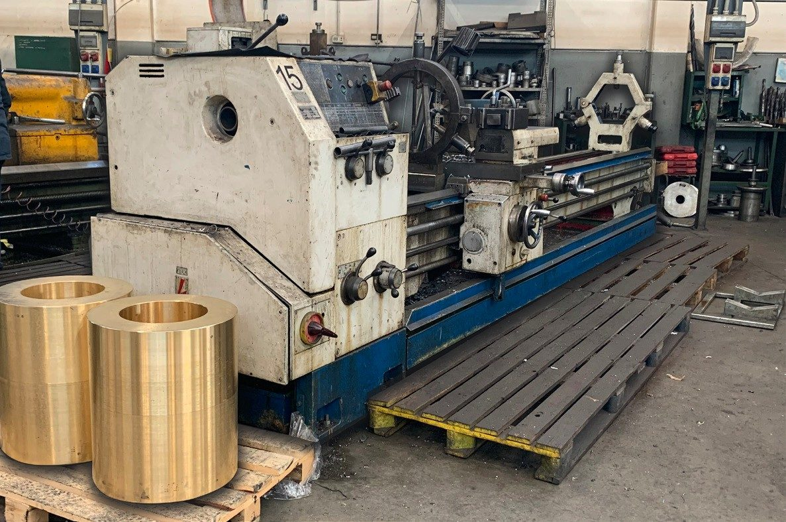

Tornitura meccanica conto terzi
GNT Officine Meccaniche esegue nella sede di Rovello Porro la tornitura CNC e tradizionale di particolari a disegno, dal pezzo singolo al piccolo lotto, su tornio CNC Doosan Puma 3100 e su torni paralleli con lunetta.
Tornitura meccanica